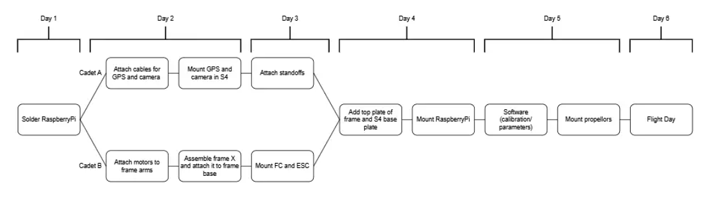

HAMR II Build Manual
Bench instructions for HAMR II, the second-generation High Agility Multirotor.
Before you start
Use this manual at the bench. Open only the task you are working on. Stop whenever a page tells you to seek instructor verification.
Bench rules
- Keep propellers off until the dedicated propeller task is published and assigned.
- Do not connect the 4S LiPo battery unless the current step explicitly tells you to do so.
- Start all screws by hand before tightening any one screw fully.
- When a part orientation is unclear, stop and compare it against the figure on the page before proceeding.
- Maintain positive control of issued tools, loose fasteners, and any bag that must be reused later.

Overall build flow. Only the published tasks below are currently active in this draft.
Published task index
Open the next task only after you have completed its blockers.